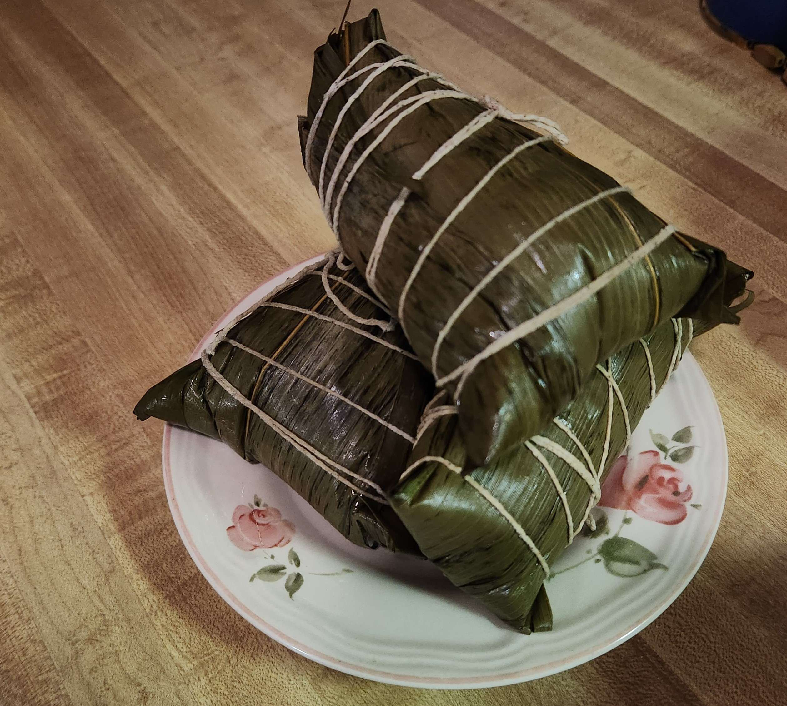

Zongzi Recipe
Makes 20 (approx.)
History:
A food made of rice originating in China and constructed en masse during the Dragon Boat Festival, a Chinese holiday taking place on the fifth day of the fifth lunar month. The holiday comes from the story of a royal advisor named Qu Yuan, who was banished from his kingdom for opposing an alliance. He became a poet and took his own life when the kingdom fell. He was highly respected in his village, so the people raced in dragon boats to retrieve his body. When they could not find it, they dropped zongzi in the river to distract the fish from eating the body. Known as "sticky rice dumplings" in the west.
Information:
A food where many different ingredients, primarily glutenous rice, are packed into bamboo leaves which are then folded and bound with a string. Zongzi can be stored for a short length of time and can be sweet or salty depending on the ingredients. The ingredients used depend on the region of China they are inspired by/made in.

Ingredients:
- 1kg Glutenous Rice
- 700g Pork Belly
- 10 Dried Skiitake Mushrooms
- 3 Golden Shallots
- A Handful of Dried Shrimp
- 20 Chestnuts
- Dark Soy Sauce
- White Pepper
- Salt
- Chinese 5 Spice Powder
- 40 Bamboo Leaves
- String
Directions:
Prep
- Soak Bamboo Leaves and Sticky Rice in water for at least 4 hours. Dry the leaves and cut off the ends, strain the rice into a bowl.
- Soak mushrooms and shrimp until softened.
- Slice the Pork Belly and Shiitake Mushrooms into small, somewhat long pieces.
- Make a small incision in each chestnut then microwave for a minute. Peel off the shell. Dice the shallots.
- Fry shallots in a pan or wok until golden brown. Separate half into a bowl and add the rice into the pan. Add soy sauce and salt to taste, then mix well.
- In another pan, add the other half of the shallots along with the mushrooms and shrimp and fry for about a minute. Add the pork belly and continue frying. While frying, add soy sauce, white pepper and chinese 5 spice to taste. Add a little water, put the lid on and simmer for 10 minutes.
Folding
- Take two bamboo leaves smooth side up and fold to form a cone.
- Always start packing with glutenous rice, then add any combination of the other ingredients to the cone. Make sure to leave some room. Finish with more glutenous rice.
- Press firmly to finish the wrapping. Tie a string around the leaves to keep them from unraveling.
- To cook, simmer in a pot for 2.5 hours or throw in the pressure cooker for 40 minutes. When boiling, make sure to add water from time to time so that the zongzi is fully submerged. Cut string, unravel and enjoy.
Video Clip:
Sources:
Cindy, Top 3 Dragon Boat Festival Stories, 2023
chinahighlights.com (https://www.chinahighlights.com/festivals/dragon-boat-festival-history.htm#google_vignette)
Youtube Video: (https://www.youtube.com/watch?v=gR96hP5m37o)